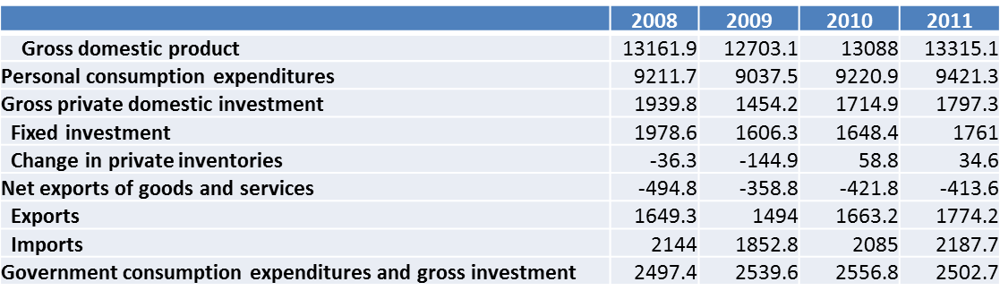
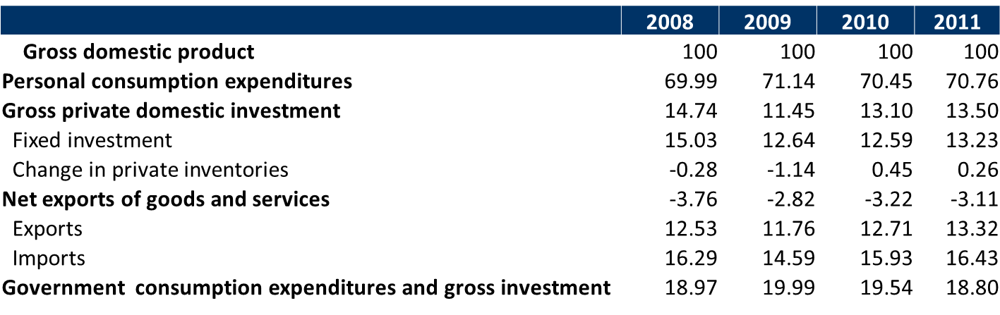
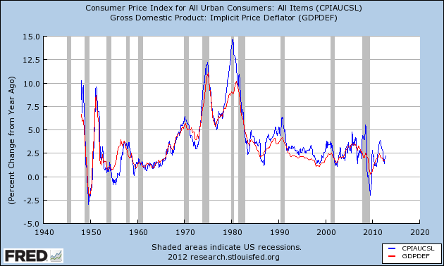
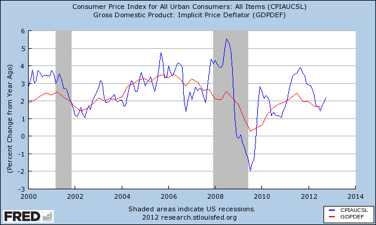

Recall from sections Section 1.1 – Section 1.3 that international macroeconomics consists of explanations for the observed up-and-down movements of important macroeconomic variables in a globalized (or, open) economy. This chapter begins the task of defining some of those important macroeconomic variables. This chapter also discusses certain accounting rules that describe how certain important macroeconomic variables are related to each other, simply by virtue of the way they are defined.
2.1 National Income Accounts
The national income accounts of a country consist of data on variables that tell us about the country’s total production of goods and services, and what those goods and services are being used for. An important measure of the total production of goods and services is the gross domestic product (GDP). If you look up a country’s GDP data in a book or on the Internet, you’ll see that GDP data comes in two flavors, nominal and real. Nominal GDP is discussed in the next section, and real GDP is discussed in the section after that.
2.2 Nominal Gross Domestic Product
There are three equivalent ways of understanding nominal gross domestic product: the value-added approach, the income approach, and the expenditure approach.
2.2.1 GDP: The Value-Added Approach
The value added by a firm is the monetary market value of the goods and services produced by the firm minus the monetary market value of the goods and services that the firm purchases from other firms (for use in its own production, obviously). A country’s gross domestic product is then the total value added—during a specified time period, such as a year—by all producers of for-sale goods located within the country.
Consider a university. Let’s say that the market value of the educational services provided by this university was $20 m during 2008, as measured by the tuition paid by its students. It would be incorrect, however, to say that the market value of the work done in the university was $20 m. The university used a lot of electricity that was produced by some other firm. The university bought massive amounts of paper, computer printer cartridges, and other stationery from other firms. The university’s capital equipment (which includes its buildings, its computers, its fleet of cars and trucks, etc.) needed costly replacements that had to be bought from other firms. Suppose the monetary market value of these and all other goods and services that were purchased from other firms and used by the university’s employees during 2008 was $16 m. Then the value added by the university was only $20 m – $16 m = $4 m.
And, as we saw two paragraphs back, the total value added by all producers of for-sale goods and services located within a country’s borders is that country’s gross domestic product.
2.2.2 GDP: The Income Approach
Now, returning to our hypothetical university, a question arises: What happens to the $4 m that the university has left of its $20 m tuition revenues after paying $16 m to other firms for its various purchases? Where will this $4 m go?
A big chunk will go to pay wages to the university’s employees. The university will have to pay rent on some property that it had leased from others. It will have to pay interest to its banks for the loans it had taken. It will have to pay what are called indirect business taxes to the government. And whatever remains will be the university’s profits, which belong to the university’s owners or shareholders. In other words, the university’s value added ends up as the income of the owners of the resources employed by the university.
What’s true for this university is true for all firms in the country. Therefore, as a country’s gross domestic product is its total value added, one can say that a country’s gross domestic product is the total income earned by the owners of all the resources employed by producers located within the country’s borders.
2.2.3 GDP: The Expenditure Approach
Let us consider our hypothetical university one more time. The education it provides its students is an example of a final good.1 A good is called a final good when it is sold to its final user; a final user is someone who will not use the purchased good to produce something else for sale.
The electricity, paper, other stationery, etc., that the university buys for the purpose of producing educational services are called intermediate goods. When goods are bought by businesses from other businesses, used as inputs in the production of other for-sale goods, and, in the process, end up disappearing completely inside those other goods, they are called intermediate goods. (Think of all the milk produced by U.S. dairy farmers that disappear into the ice cream made by U.S. firms such as Ben & Jerry’s.)
In my example, students paid $20 m for education, the final good produced by the university. As we saw in section Section 2.2.2 above, this money ends up as the incomes of all the resources—employed by the university and by the firms from which the university bought electricity, paper, and all sorts of other intermediate goods—that were used to produce the final good, education.
Extrapolating from this example, we can say that the total expenditure on all final goods produced domestically and sold to domestic final users—let’s call these goods category \(a\) goods—is equal to the income earned by all resources employed in the production of these final goods and the intermediate goods used in the production of these final goods.
Moreover, what’s true for education must also be true for the domestic production of all exported goods—let’s call these category \(b\) goods. The total expenditure on these goods must end up as the total income of all resources used to make these goods and the intermediate goods bought by the producers of these goods.
Therefore, the total expenditure on the goods in categories \(a\) and \(b\)minus the value of the intermediate goods imported by the producers of category \(a\) and \(b\) goods is the total income of all resources that were used to make category \(a\) and \(b\) goods and the domestically produced intermediate goods bought by their producers.
But this income must be the total income of all resources employed in domestic production. After all, any domestic producer would have to produce either final goods sold to domestic buyers (category \(a\)), or exported goods (category \(b\)), or the domestically produced intermediate goods bought by category \(a\) and \(b\) producers.
Therefore, going by the definition of GDP in Section 2.2.2, the total expenditure on category \(a\) and \(b\) goods minus imports of intermediate goods equals gross domestic product.
In publications of government statistics, the total expenditure by households residing within a country is called personal consumption expenditure or, simply, consumption. The total spending on final goods by domestic businesses is called gross private domestic investment or, simply, investment. Total spending by domestic government entities is called government expenditure. Therefore, total expenditure on all final goods by domestic residents is consumption \(+\) investment \(+\) government spending. Consequently, total expenditure on final goods produced domestically and sold to domestic residents—category \(a\)—is consumption \(+\) investment \(+\) government spending \(-\) imports of final goods. Therefore, the total expenditure on goods in categories \(a\) and \(b\) equals consumption \(+\) investment \(+\) government spending \(+\) exports \(-\) imports of final goods. Therefore, recalling the last sentence of the previous paragraph, gross domestic product equals consumption \(+\) investment \(+\) government spending \(+\) exports \(-\) imports of final goods \(-\) imports of intermediate goods. Consequently, we get:
This is easily the most important equation in this book. It is called the national income identity and will be central to our discussion right up to the very end of this book.
Note that it is not terribly meaningful to distinguish between exports of final goods and exports of intermediate goods. And the same can be said about imports too. Nevertheless, if we simplify a bit and assume that all exports and imports are of final goods, Equation 2.1 can be interpreted as follows: a country’s gross domestic product is the market value of all final goods and services produced within the country in a given period of time (usually a year). This is a very popular definition that you will see in many textbooks. I will use this definition in this book too, as a convenient shorthand.
According to the Bureau of Economic Analysis of the U.S. Department of Commerce, the nominal GDP of the United States for 2014 was $17608.14 billion. This means that spending by US residents on the final goods and services that were “Made in USA” in 2014 plus net exports of “Made in USA” goods and services were together equal to a grand total of $17608.14 billion. This number is also the total value added by all producers located in the USA. And—perhaps most meaningfully—this number is the total income earned by all productive resources employed by producers located in the USA.
2.3 Real Gross Domestic Product
Looking at the second column in Table 2.1, we see that the nominal gross domestic product of the United States increased from $17608.14 billion in 2014 to $18295.02 billion in 2015 and to $18804.91 billion in 2016. If one assumes that our quality of life depends crucially on the goods and services we produce, these ever increasing dollar figures seem like good news.
But are they?
As nominal gross domestic product is the monetary market value of all final goods produced, it could increase from one year to the next either as a result of:
increases in the production of various goods, or
increases in the market prices of those goods, or
increases in both production and prices.
Consequently, increases in nominal gross domestic product do not necessarily imply increases in production. Mere inflation could make the numbers go up and up.
Now if, by sheer luck, all prices remained unchanged during 2014 – 2016, then, yes, the increases in nominal GDP during that period would indeed strongly indicate rising overall levels of production.2
Of course, in real life, prices do not stay unchanged year after year. But even if prices moved around a lot during 2014 – 2016, we could still ask a hypothetical question: What would nominal GDP have been during 2014 – 2016 if prices had remained unchanged at 2014 levels? This is not an unanswerable question. We know the 2014 prices of all final goods, and we know the quantities produced, of all final goods, during the years 2014, 2015 and 2016. (Otherwise, we would not have been able to calculate the nominal GDP figures in Table 2.1.) Therefore, we can easily calculate what America’s nominal GDP would have been in those years, had the prices of 2014 prevailed in all years.
Indeed, data on this hypothetical measure—formally called real gross domestic product or constant-prices gross domestic product or inflation-adjusted gross domestic product—is available for virtually every country in the world. The third column of Table 2.1 shows America’s real gross domestic product, calculated on the assumption that the prices of the year 2017 prevailed in all years, for the decade 2014– 2023.3
As you can see, not only did America’s nominal GDP increase throughout 2014– 2023, so did real GDP. This is clear evidence of actual increases in production. To repeat, the dollar figures in the third column of Table 2.1 were all calculated on the hypothetical assumption that 2017’s prices prevailed in every year. As the same prices were used for every year’s real GDP calculations, the increases in real GDP strongly indicate overall increases in production.
The year whose prices are being assumed hypothetically to prevail in all years—the year 2017 in this case—is called the base year. There is nothing sacrosanct about the year 2017—any other year could have served just as well. As long as every year’s GDP is calculated using the same set of prices, we will get a measure of GDP that is not affected by fluctuations in the overall level of prices.
In the rest of this book, all references to gross domestic product are references to real gross domestic product. Also, I will use the symbol \(Y\) to denote real gross domestic product.
2.3.1 Notation: Growth Rates
Consider a variable \(x\). I will denote its current value as simply \(x\) and its past value as \(x_{-1}\). Then, the growth rate of \(x\), which I will denote \(x_g\), can be defined as follows: \[
x_g\equiv\frac{x-x_{-1}}{x_{-1}}.
\tag{2.2}\]
Here, \(x-x_{-1}\) represents the increase in the value of \(x\). Therefore, \((x-x_{-1})/x_{-1}\) is the proportionate increase in the value of \(x\) or, simply, the growth rate of \(x\). If \(x_{-1}=50\) and \(x=60\), the increase is \(x-x_{-1}=60-50=10\). But the rate of growth is \(x_g\equiv(x-x_{-1})/x_{-1}=(60-50)/50=0.20\).
If you want the growth rate as a percentage, simply multiply \(x_g\) by 100 to get \(0.20\times100=20\) percent.
Table 2.2: The base year is 2017
USA, 2014 -- 2023
Year
Growth, Nominal GDP (%)
Growth, Real GDP (%)
Inflation (%)
2014
4.31
2.52
1.74
2015
3.90
2.95
0.93
2016
2.79
1.82
0.95
2017
4.29
2.46
1.79
2018
5.33
2.97
2.29
2019
4.28
2.58
1.65
2020
−0.86
−2.16
1.33
2021
10.90
6.06
4.57
2022
9.82
2.51
7.13
2023
6.59
2.89
3.60
To take a more concrete example, consider real gross domestic product (\(Y\)) and its growth rate (\(Y_g\)). Table 2.1 tells us that real GDP of the U.S. (in billions of chained 2017 dollars), was $18261.71 in 2014 and $18799.62 in 2015. Therefore, the growth rate of America’s real GDP in 2015 was \[
Y_{g,2015}=\frac{Y_{2015}-Y_{2014}}{Y_{2014}} = \frac{18799.62-18261.71}{18261.71}\times 100 = 2.95
\] percent. The real GDP growth rates for the decade 2014–2023 are given in Table 2.2.

Figure 2.1: Real GDP and its Components, U.S.A., 2008–2011, in billions of chained 2005 dollars. Source: Bureau of Economic Analysis, U.S. Department of Commerce, National Income and Product Accounts, Table 1.1.6.

Figure 2.2: Real GDP and its Components, U.S.A., 2008–2011, as percent of Real GDP. Source: Bureau of Economic Analysis, U.S. Department of Commerce, National Income and Product Accounts, Table 1.1.6.
For my discussion of the theory of international macroeconomics, I will also use a forward-looking definition of the growth rate of a variable. Specifically, the forward-looking growth rate of \(x\) is defined as follows: \[
x_g\equiv\frac{x_f-x}{x}.
\tag{2.3}\]
Here, \(x_f\) represents the value of \(x\) in the future. Therefore, \(x_f-x\) represents the increase in the value of \(x\). Therefore, \((x_f-x)/x\) is the proportionate increase in the value of \(x\) or, simply, the growth rate of \(x\).
2.4 The Components of GDP
Now that we have discussed the measurement of a country’s total production, let us look at what happens to it. Government statisticians typically publish data not only on a country’s output of final goods and services (that is, its GDP) but also on who bought those final goods and services. As in Figure 2.1, national income data usually breaks down the big GDP number into four smaller numbers that represent the final-goods purchases made by four major categories of buyers:
personal consumption expenditures (\(C\)),
gross private domestic investment (\(I\)),
government purchases (\(G\)), and
net exports of goods and services (\(NX\)).
In other words, Equation 2.1, which is called the national income identity and breaks down nominal gross domestic product into its components, is equally true for real gross domestic product: \[
Y=C+I+G+NX.
\tag{2.4}\]
2.4.1 Consumption
The real (i.e., inflation-adjusted) personal consumption expenditures of the residents of a country in a given year is denoted by the symbol \(C\). In U.S. data, \(C\) consists of spending by households on all final goods except newly built homes. As you can see from the U.S. data in Figure 2.2, \(C\) is a very large part—more than two-thirds—of GDP.
2.4.2 Investment
The real gross private domestic investment (or, simply, investment) of a country is denoted by the symbol \(I\). In U.S. data, \(I\) consists of:
the purchases of fixed assets (equipment, software, and buildings) by businesses for use in production,
increases in inventories of unsold goods held by businesses.
Note that the inclusion of these three categories of final goods under investment is not random. There is an underlying theme here: machines, new buildings, stocks of as-yet-unsold goods, etc., all contribute to our future welfare.5 The money we spend on pizzas and backrubs, by contrast, are all about the here and now and are included under consumption, \(C\).
As you can see from the U.S. data in Figure 2.2, \(I\), at less than 15% of GDP, is a lot less important than \(C\). And yet, because of its tendency to fluctuate wildly, investment spending is an important cause of the ups and downs of the overall economy.
2.4.2.1 Inventories
The inclusion of increases in businesses’ stocks of unsold goods in \(I\) needs some justification. What’s the point of including this in \(I\)?
Keep in mind that to get an accurate picture of the health of an economy in a given year we need to count the market value of all goods and services produced during the year, whether or not they are sold by December 31st of that year. Those unsold goods would not be counted in \(C\), \(I\), \(G\), and \(NX\), if these four variables included only the actual purchases of final goods by households, businesses, the government, and foreign buyers. To make sure that all goods produced in 2008 get counted in that year’s GDP—even if they are not sold in 2008—statisticians include the additions of unsold goods to businesses’ inventories (or, warehouse stocks) in \(I\).
Note that I did not say that additions to businesses’ inventories of unsold final goods are included in \(I\); even the intermediate goods that were produced in 2008 but not sold by the end of that year need to be counted in that year’s GDP.
Sure, as the ice cream made by Ben & Jerry’s is counted in GDP, one should not separately count the milk that went into it because the monetary market value of the ice cream already includes the monetary market value of the milk. But let’s complicate the story a little. Suppose Ben & Jerry’s buys $10 million of freshly produced milk some time in 2008, but does not turn it into ice cream by December 31, 2008. Instead, the milk is sitting in their freezer on that last day of 2008, waiting to be turned into Cherry Garcia some time in 2009. This $10 million worth of milk was produced in 2008 and, therefore, should be included in 2008’s GDP. To ensure this, the rules of GDP accounting require that any goods that have been added to the inventories (or, warehouse stocks of goods) of private businesses during 2008 are final goods and their value must be counted in the GDP for 2008.
2.4.3 Government Spending
Real government expenditures (\(G\)) is pretty much what it sounds like; it is the inflation-adjusted monetary value of all final goods and services bought by government entities.
Typically, governments also spend huge amounts of money on transfer payments or, loosely speaking, gifts (usually to needy people). But \(G\) includes only the money spent on the purchase of final goods and does not include transfer payments.
2.4.4 Net Exports
Real exports of goods and services (\(EX\)) is the inflation-adjusted value of all domestically produced goods that are bought by foreigners.
Real imports of goods and services (\(IM\)) is the inflation-adjusted value of all foreign-made goods that are bought by domestic residents.
Real net exports (\(NX\)) is then defined as \(NX\equiv EX-IM\). This also goes by other names, such as trade surplus, balance on goods and services, and, somewhat loosely, balance on the current account—see Equation 3.1. Note, therefore, that \(NX\) could be positive, zero or negative. When \(NX\) is positive/zero/negative, the country is said to have a Trade Surplus/Balanced Trade/a Trade Deficit.
2.4.4.1 All exports and imports are final!
There’s one more loose end in my definition of GDP that I need to tie up. Note that in Section 2.4.4 above I defined exports as “all domestically produced goods that are bought by foreigners”, not all domestically produced final goods”. Similarly, note that I defined imports as “all foreign-made goods that are bought by domestic residents”, not all foreign-made final goods”. Why am I including exports and imports of intermediate goods? Suppose that American dairy farmers produce $10 million of milk in 2008 and sell it to a Canadian ice cream company that turns the milk into ice cream in its plant in Vancouver, also in 2008. The monetary value of the ice cream would not be counted in America’s GDP because the ice cream was made in Canada. So, if the $10 million of milk is regarded as an intermediate good, it would not be counted at all in America’s GDP. When the milk is turned into ice cream by Ben & Jerry’s, the ice cream is counted in America’s GDP and, therefore, so is the milk, although indirectly. But as for the milk that is sold to a Canadian ice cream company, the only way to have it counted in America’s GDP is to require that anything sold to foreigners is counted in \(EX\). Similarly, it is straightforward to show that imports of intermediate goods should be counted in the importing country’s \(IM\).
So, here’s the final corrected version—fingers crossed!—of the definition of gross domestic product: GDP is the monetary market value of all final goods and services produced within a country in a given year plus the increase in its inventories of intermediate goods plus its net exports of intermediate goods.
2.5 The National Income Identity
To recap, we have so far defined real gross domestic product (\(Y\)), real personal consumption expenditure (\(C\)), real gross private domestic investment (\(I\)), real government spending (\(G\)), and real exports (\(EX\)). It is tempting to argue that \(Y\) must be equal to \(C+I+G+EX\). After all, \(Y\) represents all final goods that are “Made in USA” and any such good would have to be bought either by American households (\(C\)), or by American businesses (\(I\)), or by America’s government (\(G\)), or by foreigners (\(EX\)). Therefore, \(Y\) should be equal to \(C+I+G+EX\), right?
Well, not exactly. Although \(C+I+G\), which incidentally is referred to as gross domestic purchases, does represent the total purchases by domestic households, businesses, and government entities, it includes purchases of imported goods as well as domestically produced goods. Therefore, only if we subtract the inflation-adjusted monetary value of all imported goods (denoted by the symbol \(IM\)) from \(C+I+G+EX\) would we get \(Y\). That is, \(Y=C+I+G+EX-IM\).
As we saw in Section 2.4.4, the terms net exports, trade surplus, and balance on goods and services all refer to \(NX\equiv EX-IM\), the excess of exports over imports. Therefore, we get the national income identity: \[
Y=C+I+G+NX.
\tag{2.5}\]
Figure 2.1 shows data on real gross domestic product and its components for the United States for the years 2005–8. You can check that \(C+I+G+NX\) is indeed equal to real GDP.
A theoretically equivalent measure is gross domestic income. When government statisticians measure the total value added by domestic producers, they measure the gross domestic product (GDP). When they measure the total income of all resources employed by domestic producers, they measure gross domestic income (GDI). As we have seen above, if measured with perfect accuracy, these two magnitudes should be the same, as they are theoretically equivalent. In practice, however, errors do creep in, and the GDP and GDI numbers tend to differ. This difference is called the statistical discrepancy: \(GDP=GDI+\text{statistical discrepancy}\).
2.5.1 Beyond GDP: Other Measures of Total Production
Gross domestic product is not the only measure of a country’s total production, there are others.
2.5.1.1 Gross National Product
Recall that a country’s gross domestic product is not only the total value added by all producers located within the country, it is also equal to gross domestic income, which is the total income earned by the factors of production (or, in plain language, resources) employed by all producers located within the country.6
Some of the resources employed by producers located within the country may be owned by foreign residents, and the income paid to these resources goes, necessarily, to their foreign owners. Conversely, some residents of the domestic country may earn income for work done for producers located in foreign countries. A country’s net factor income earned from foreign residents (\(NIF\)) equals total income earned by domestic residents from foreign residents minus total income paid by domestic residents to foreign residents.
As, in some cases, it is important to know the total income earned by the factors of production owned by a country’s residents, we often pay attention to a country’s gross national product (GNP): \[
\text{GNP}=\text{GDP}+\text{NIF}.
\tag{2.6}\]
A theoretically equivalent measure is gross national income: \(GNI=GDI+NIF\). Recall from Section 2.5 that although GDP and GDI are theoretically the same, and would be equal if accurately measure, in practice the measured magnitudes differ slightly: \(GDP=GDI+\text{statistical discrepancy}\). The same distinction needs to be made between GNP and GNI as well; they’d be equal if measured accurately, but in practice \(GNP=GNI+\text{statistical discrepancy}\).
2.5.1.2 Gross National Disposable Income
The residents of a country may send gifts to—and receive gifts from—the residents of other countries. A country’s net unilateral transfers of income from foreign residents (NUT) is defined as gifts received minus gifts given. Gross national disposable income (GNDI) is then defined as \[
\text{GNDI}=\text{GNI}+\text{NUT}.
\tag{2.7}\]
Recall that gross domestic product is denoted by the symbol \(Y\). In practice, the statistical discrepancy between GDP and GDI (or between GNP and GNI) is small. Moreover, net factor income earned from foreign residents (NIF) and net unilateral transfers of income from foreign residents (NUT) tend to be small too. As a result, the differences between GDP, GDI, GNP, GNI, and GNDI are, for most practical purposes, small enough to be ignored. Consequently, to keep the discussion simple, I will use the symbol \(Y\) to refer to all these different ways of measuring a country’s total value added, total income, and total expenditure.
2.5.1.3 National Income Identity, Revisited
Recall from Equation 2.5 that \[ Y=C+I+G+NX.\] Therefore, \[Y+\text{NIF}+\text{NUT}=C+I+G+NX+\text{NIF}+\text{NUT}.\] It is clear from equations Equation 2.6 and Equation 2.7, the last equation can be re-written as \[
\text{GNDI}=C+I+G+(NX+\text{NIF}+\text{NUT}).
\]
As we will see in the next chapter’s discussion of balance of payments accounting, the expression within parentheses in the last equation is called the balance on the current account or, simply the current account (CA). The equation above then yields a slightly updated version of the national income identity: \[
\text{GNDI}=C+I+G+CA.
\tag{2.8}\]
The reader should be warned, however, that I will use the terms net exports (\(NX\)) and current account balance (\(CA=NX+NIF+NUT\)) interchangeably throughout this book, because—as was pointed out a short while back in Section 2.5.1.2—both \(NIF\) and \(NUT\) tend to be small in magnitude.
2.6 Prices and Inflation
Inflation is a topic of major concern in economics as well as in our daily lives. Therefore, it is important to understand what causes it and how it can be controlled. But before we can get to that, we need to discuss how inflation is measured.
The measurement of inflation can be quite tricky. While the prices of some goods may rise from one year to the next, the prices of other goods may fall. In such cases, one needs to come up with one number that summarizes the overall change in prices.
2.6.1 The Implicit Price Deflator for GDP
Suppose you recently spent a day in Boston followed by a day in San Antonio. You ate the same meals in both cities, bought the same newspaper, rented the same type of car, and stayed in identical hotels. Nevertheless, you ended up spending 10% more in Boston. Why? You did not buy more stuff in Boston; in fact, you bought exactly the same things in both cities. Therefore, the only explanation is that prices were higher overall in Boston. Some things may be cheaper in Boston and some other things may be cheaper in San Antonio. But it is reasonable to conclude—from your own limited experience in the two cities—that the overall level of prices was 10% higher in Boston relative to San Antonio.
Now consider another hypothetical example. Suppose you spent both October 1, 2005 and October 1, 2006 in Boston and during both visits you bought the exact same things, used the same transportation, and stayed in identical hotel rooms. And yet, you ended up spending 4% more in 2006 than in 2005. Using the same logic as in the last paragraph, we can conclude that although individual items’ prices may have changed at different rates, the overall level of prices in Boston rose 4% in 2006 relative to 2005.
In fact, you don’t even have to visit Boston on two different dates. After your October 1, 2006 visit, you could dig up data on the prices that you would have paid if you had visited Boston a year earlier and bought the same goods and services that you bought during your October 1, 2006 visit, and you would have again reached the conclusion that the overall level of prices rose 4% in Boston in 2006. And that, by and large, is what government statisticians do to measure the rates of change of the overall level of prices in the US and other countries.
One way to measure the overall level of prices is to compare the nominal GDP and the real GDP for a particular year. We see in Table 2.1 that in 1999 America’s nominal GDP was $9,353.5 billion and America’s real GDP, with base year 2005, was $10,779.8 billion. Stated differently, in 1999 America’s nominal GDP was 86.8% of America’s real GDP: \[
\begin{eqnarray*}
\frac{\text{Nominal GDP in 1999}}{\text{Real GDP in 1999 with base year 2005}}\times 100&=&\frac{9,353.5}{10,779.8}\times 100\\
&=& 86.8.
\end{eqnarray*}
\] So, at 1999 prices, the dollar value of all final goods produced in the U.S. in 1999 was $9,353.5 billion, whereas, at 2005 prices, the dollar value of the exact same goods was $10,779.8 billion.
Now, how could one dollar value of the final goods made in 1999 be different from the other dollar value of the exact same goods? As the quantities used in the nominal GDP calculation are the same as the quantities used in the real GDP calculation, these two dollar values must be different because they use different prices.
More precisely, the only possible reason why America’s nominal GDP in 1999 is 86.8% of America’s real GDP in 1999 must be that the prices that prevailed in 1999, which are the ones that were used in the calculation of nominal GDP, were, in an overall sense, 86.8% as high as the prices that had prevailed in 2005, which are the ones that were used in the calculation of real GDP.
It would be incorrect to conclude that all final goods were 86.8% as pricey in 1999 as in 2005. For apples, the 1999 price may have been 80% of the 2005 price. For haircuts, the 1999 price may have been 130% of the 2005 price. For gas at the pump, the 1999 price may have been 99% of the 2005 price. But it is reasonable to say that in an overall sense the 1999 prices were 86.8% as high as the 2005 prices because the final goods that were produced in America in 1999 were only 86.8% as valuable at 1999 prices than at 2005 prices.
Thus, by comparing the nominal and real GDP values for a particular year we are able to measure how that year’s prices as a whole measure up relative to the base year’s prices. Formally, the
\[
\text{Implicit Price Deflator for GDP in year $n$ with base year $m$} = \frac{\text{Nominal GDP in year $n$}}{\text{Real GDP in year $n$ with base year $m$}}\times 100
\tag{2.9}\] shows what the overall level of final goods’ prices in year \(n\) was as a percentage of the base year’s overall price level. More compactly, \[
\text{Implicit Price Deflator}=
\frac{\text{Nominal GDP}}{\text{Real GDP}}\times 100.
\tag{2.10}\]
The fourth column in Table 2.1 shows America’s implicit price deflator for GDP (IPDGDP) for the 1999–2008 decade. Specifically, it shows that the overall level of prices in 1999 was 86.8% of the overall level of prices in 2005. Similarly, the overall level of prices in 2005 was 100% of the overall level of prices in 2005—what a shocker!—and the overall price level in 2007 was 106.2% of the overall level of prices in 2005.7
In the remainder of these lectures, I will represent the overall price level for a particular year not by the implicit price deflator for GDP but by a very slightly different version of it: \[
\begin{eqnarray}
P&=&\frac{\text{Implicit Price Deflator for GDP}}{100}\nonumber \\
&=&\frac{\text{Nominal GDP}}{\text{Real GDP}}\times\frac{100}{100}\nonumber \\
&=&\frac{\text{Nominal GDP}}{Y}.
\end{eqnarray}
\tag{2.11}\] Note that Equation 2.11 comes from equation Equation 2.9.
In other words, while real GDP is represented by the symbol \(Y\), the overall level of prices is denoted by the symbol \(P\), and nominal GDP is given by \[
\text{Nominal GDP}=P\times Y.
\tag{2.12}\]
2.6.2 The Consumer Price Index
The implicit price deflator for GDP is not the only one-number representation of the overall level of the prices of the innumerable goods that are bought and sold in a modern economy. Indeed, it may not even be the most popular method: a frequently cited alternative measure of the overall level of prices is the consumer price index.
Whereas the implicit price deflator for GDP is (100 times) the value of the current year’s output of final goods at the current year’s prices divided by the value of the same set of goods at the base year’s prices, the consumer price index is (100 times) the value of a fixed bundle of goods that represents the purchases of a typical consumer* at the current year’s prices divided by the value of that same bundle of goods at the base year’s prices.
Although Equation 2.11 sees the overall price level, \(P\), as the implicit deflator for GDP divided by 100, you may, if you wish, think of \(P\) as the consumer price index divided by 100. In practical terms, these two measures of the overall price level tend to move in sync most of the time.8
2.6.3 Inflation
Finally, how do we measure inflation? Inflation is defined simply as the growth rate of the overall level of prices, where the term ‘growth rate’ is as it is defined in Section 2.3.1. I will denote inflation by the symbol \(\pi\), which is the lower-case Greek letter ‘pi’. Denoting the past value of the overall price level by the symbol \(P_{-1}\), we can use equation Equation 2.2 to express inflation as follows: \[
\pi\equiv\frac{P-P_{-1}}{P_{-1}}\equiv\frac{P}{P_{-1}}-1.
\tag{2.13}\] The increase in the overall price level is \(P-P_{-1}\). But the proportionate increase in \(P\) is \((P-P_{-1})/P_{-1}\). And to express inflation as a percentage, one has to multiply \(\pi\) by 100.
For example, the annual inflation rate for, say, 2004 is \[
\begin{eqnarray}
{\text{Inflation during 2004}}\nonumber \\
&=&\frac{P_{2004}-P_{2003}}{P_{2003}}\times 100\\
&=&\frac{\text{IPDGDP}_{2004}-\text{IPDGDP}_{2003}}{\text{IPDGDP}_{2003}}\times 100\\
&=&\frac{96.77-94.1}{94.1}\times 100\nonumber \\
&=&2.8 \text{ percent}.\nonumber
\end{eqnarray}
\tag{2.14}\]
America’s annual inflation rates, as defined above, are shown in Table 2.2 for 1999–2008. Although these inflation numbers are calculated based on the implicit price deflator for GDP as the price level, one could also think of inflation as the annual percentage increase in the consumer price index, which has been discussed above in Section 2.6.2. In practical terms, this does not make much difference to inflation data, especially over longer periods, as you can see in Figure 2.3. Over short periods of time, however, inflation measures based on the consumer price index are more volatile, as can be seen in Figure 2.4}.

Figure 2.3: Inflation: Two Measures The red graph represents US inflation measured by the year-on-year percentage change in the implicit price deflator for GDP. The blue graph uses the consumer price index (for all urban consumers) instead. Source: Data on the implicit price deflator for GDP was downloaded from http://research.stlouisfed.org/fred2/series/GDPDEF and data on the consumer price index was downloaded from http://research.stlouisfed.org/fred2/series/CPIAUCSL, both on November 25, 2012.

Figure 2.4: Inflation: CPI Is More Volatile The red graph represents US inflation measured by the year-on-year percentage change in the implicit price deflator for GDP. The blue graph uses the consumer price index (for all urban consumers) instead. This chart focuses on the 21st century and highlights the volatility of the CPI. Source: Data on the implicit price deflator for GDP was downloaded from http://research.stlouisfed.org/fred2/series/GDPDEF and data on the consumer price index was downloaded from http://research.stlouisfed.org/fred2/series/CPIAUCSL, both on November 25, 2012.
Even in this case, production might rise for some goods and fall for others. But it is straightforward to show that if nominal GDP rises and prices stay unchanged, a country would be able to buy increasing amounts of every good through international trade.↩︎
Formally, these numbers are in “chained 2017 dollars”. The subtleties of this particular method of adjusting nominal values for inflation will not concern us here.↩︎
As we saw in the previous paragraph, this is the only category of household spending that is not included in \(C\).↩︎
The first two categories—fixed assets and new homes—are combined into the fixed investment category in Figure 2.1.↩︎
In other words, if measured accurately, GDP \(=\) GDI.↩︎
If you saw Table 2.1, but without any information about 2005 being the base year in the heading of the third column, would you still be able to figure out that 2005 is the base year?↩︎
However, an increase in the price of M16 rifles, which are usually bought by a country’s armed forces but not by its typical consumer—not yet anyway!—would raise the value of the GDP deflator but not the CPI.↩︎